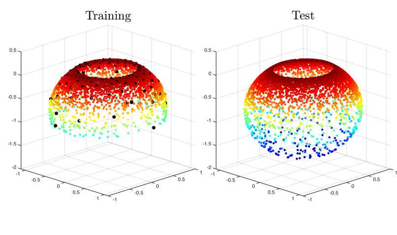
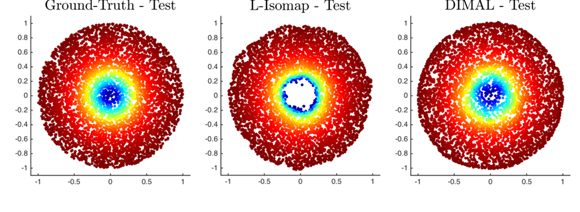
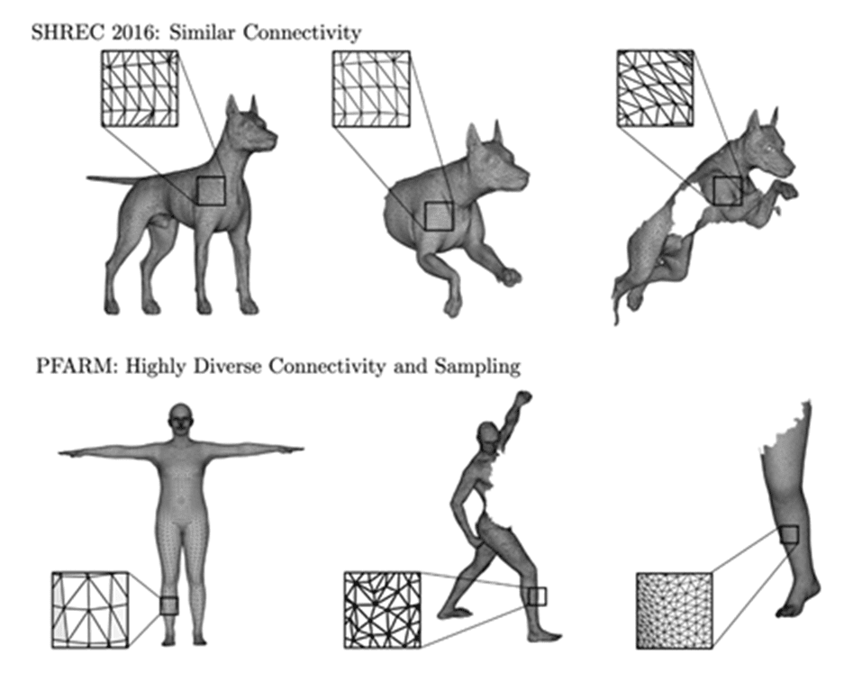

Overview
My research is centered around Geometry, Numerical Methods, and Machine Learning. I develop solutions for computational problems for different geometric modalities: images, groups, graphs, and discrete representations of geometric shapes like 3D meshes and point clouds. My current focus is on the following broad (and in many cases intersecting) themes described below. You can find a more precise personal statement on these topics here.
Computational Optimal Transport on Geometric Domains
Mathematical tools from Optimal Transport provide a meaningful distance between probability distributions (e.g. the Wasserstein Distance). In terms of real-world applications, this has led to impressive results in shape interpolation, generative models, matching pointsets, and solving PDE's. Despite a demanding computational bottleneck, recent advances allow for computationally tractable numerical methods to estimate the transport and associated distances - typically on Euclidean (flat) domains.
It is interesting and useful to develop these methods for more challenging geometries - grids, groups, and graphs, especially for non-trivial intrinsic metrics. Some important questions that enable solutions in this direction are:
How to compute and/or approximate distances on a manifold?
How to efficiently solve PDE's (e.g. diffusion equation) on a manifold?
How to encode geometric data (e.g. images/shapes/learned features) as probability measures?
Machine Learning for Numerical Geometry
Numerical geometry comprises mathematically grounded methods that utilize theoretical inputs from geometry, partial differential equations (PDEs), and numerical analysis, for tackling various computational problems in data science. In direct comparison, advances in deep learning exhibit a black-box nature where essential features are learned purely from training data examples with remarkable results across different training paradigms (supervised, unsupervised, self-supervised, etc).


However, some important factors that are generally not well understood and/or documented are: data and compute efficiency, interpretability, and adversarial robustness. Therefore, it is valuable to analyze and quantify these aspects for different applications and build holistic models that can combine the best of both worlds. Some research topics along this direction:
Integrate different PDEs (typically inspired from physics and neuroscience) into neural networks and analyze their performance empirically and mathematically.
Endowing neural feature spaces with varying degrees of geometric structure (symmetries, metric preservation) to make them more meaningful and efficient
Shape Analysis
Geometric Shapes exist in various forms and complexities: from one-dimensional curves, or two-dimensional surfaces to higher-dimensional geometries (manifolds), with important applications like computer graphics and medical imaging. However, working with discrete representations of shapes in practice (like meshes and point-clouds) involves facing considerable challenges like: noise & sampling, partiality & occlusion, rigid and non-rigid deformations, etc.

It is therefore desirable to construct shape features that are invariant or equivariant to these deformations. Tools from Geometric Deep-Learning (GDL) are currently the popular techniques for addressing these issues and some topics of interest include:
Exploring different tools for shape comparison like distances, intrinsic differential operators, and kernel methods that can be learned from diverse datasets with meaningful GDL architectures
Fast Approximation of Spectral Methods for Manifold Learning and Geometric Data Analysis